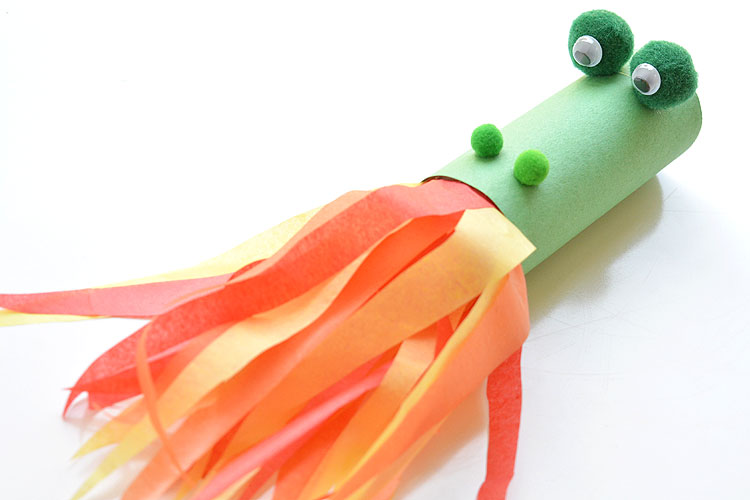

This fire breathing dragon craft is made from a toilet paper roll, it is an easy kids craft that uses simple craft supplies. When you blow into the end of the tube the tissue paper will look like as if flames are coming out of a dragon's mouth. It is super easy and super fun, kids will surely enjoy making it. Below are the materials and procedures to make the Fire Breathing Dragon Craft.